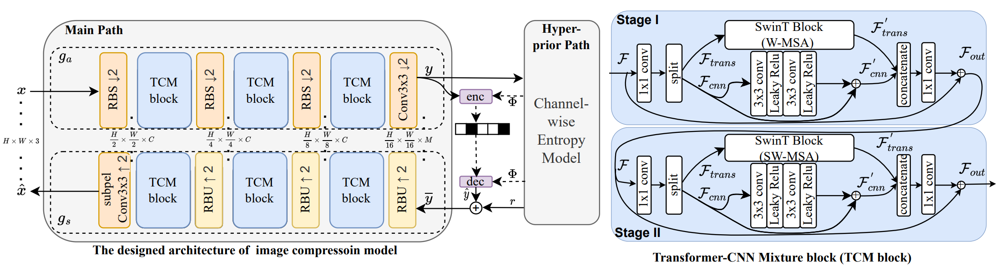

SUN Lab
Yokohama National University
Learned Image Codec
Traditional image compresion standards have been developed for more than 30 years. On the other hand, with the developments of neural network, learned image compression (LIC) has shown a superior coding ability than the traditional image compression standards. Two proposed LIC networks (CVPR'20, CVPR'23) are given below.
Proposed LIC with GMM and attention, which was the state-of-the-art until 2020.
Proposed LIC with mixed transformer and CNN, which was the state-of-the-art until 2023.
Learned Video Codec
Traditional video compresion standards have also been developed for over 30 years. Similar to the case of image compression, learned video compression (LVC) has demonstrated superior coding efficiency compared to traditional video compression standards. The proposed LVC network (CVPR'25) is shown below.
Proposed LVC with feature level attention.
Image Coding for Machine
Cisco reported that the communication for the machine-to-machine will occupy up to 50% of all the communication in the coming IoT society. Therefore, reducing the transmission burden between machines becomes extremely important. Differently from human vision, image coding for machine aims to improve the accuracy of machine vision tasks such as object detection/tracking.
Proposed semantic segmentation in learned compressed domain
FPGA Neural Network Engine
Among various hardware platforms, FPGA has the advantage of high hardware utilization and power efficiency compared with CPU and GPU. In addition, compared with ASIC, FPGA is more flexible and reconfigurable which can keep up with the fast developments of neural network models. We developed an FPGA neural engine with fine-grained pipeline, and built a FPGA codec system for LIC.
We have a camera (right bottom) which captures the 720p 30fps raw video in the right display. Then one Xilinx FPGA board VCU118 is in charge of encoding. The encoded bitstream is sent to another FPGA board for the decoding. Finally, the decoded video is shown in the left display.
To evaluate the latency, we capture the real-time timestamps, and the difference between the raw timestamp and decoded timestamp is the end-to-end latency, which is around 560 ms. We also use the power meter to evaluate the real power for the overall FPGA board.
ASIC Chip Design

Developed 8K@120fps HEVC decoder chip in which I was in charge of Inverse Transform (IT) and De-quantization (IQ) components.